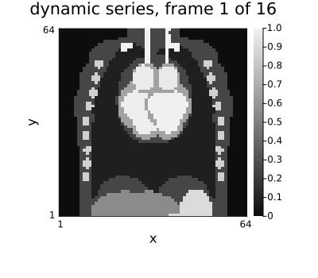
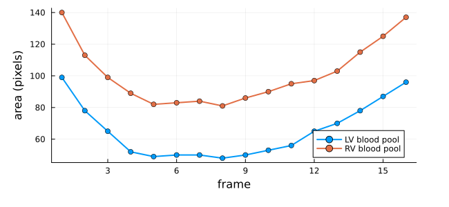
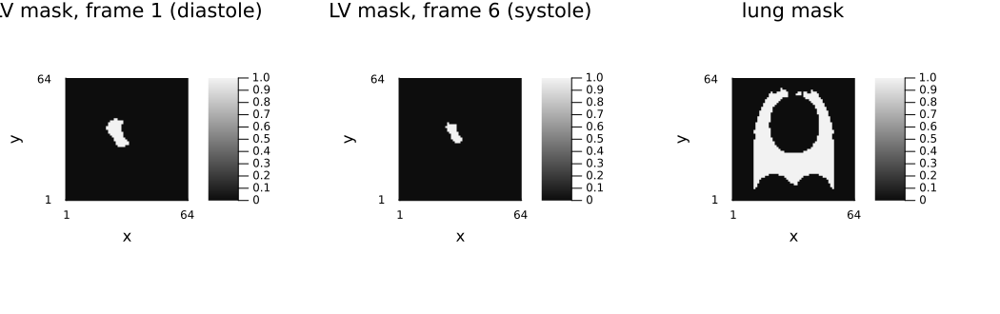
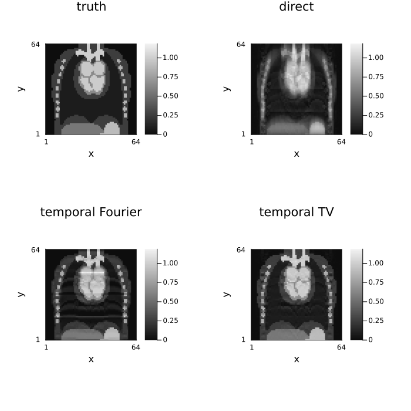
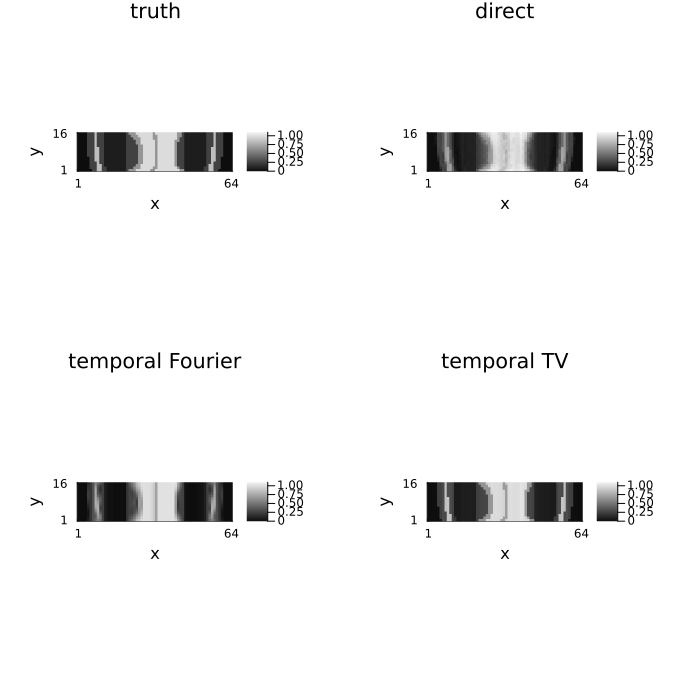
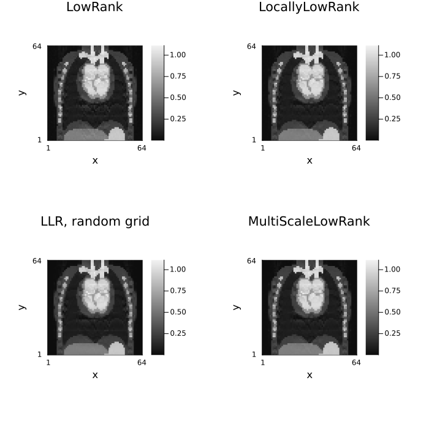
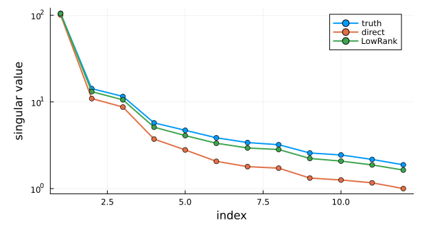
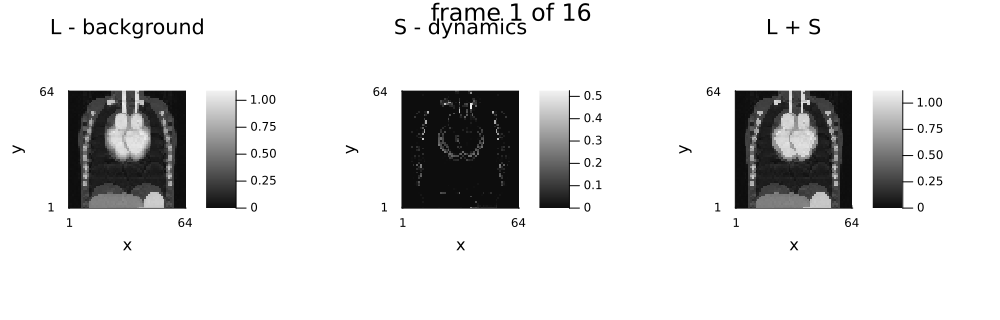

7 — Dynamic imaging and image decomposition
Download this tutorial as a Jupyter notebook (with NotebookUtils.jl next to it).
Everything in this tutorial needs more than one image: a time series, or a model that splits one image into additive parts.
Image decomposition is the subject here: the image is a sum of components, each carrying its own regularizer (low-rank + sparse, cartoon + ramp), all solved together in one problem. It is unrelated to task splitting, which runs one independent reconstruction per batch element and lives in tutorial 06 §8.
Contents
- A dynamic torso-phantom dataset
- Temporal regularizers
- Low-rank regularizers
- Image decomposition — low-rank + sparse
using .NotebookUtils
using Ristretto
using GeometricMedicalPhantoms: create_torso_phantom, TissueMask,
generate_respiratory_signal, generate_cardiac_signals
using MIRTjim: jim
using Plots
using NamedDims
using LinearAlgebra
using Statistics: mean
using Random
Random.seed!(0);1. A dynamic torso-phantom dataset
The phantom is create_torso_phantom from GeometricMedicalPhantoms.jl, driven by that package's physiological signal generators:
generate_cardiac_signals(duration, fs, hr)returns the four chamber volumes in millilitres (lv,rv,la,ra); the phantom rescales its chambers to follow them.generate_respiratory_signal(duration, fs, rr)returns lung volume in litres; the phantom moves the diaphragm and the structures above it accordingly.
Sixteen frames spanning one cardiac cycle at 60 bpm, with the respiratory signal sampled over the same one-second window, gives a short cine with a strongly moving heart and a slow through-plane drift. A coronal slice through the mid-chest cuts through both ventricles and, unlike an axial slice, also shows the diaphragm — the structure the respiratory signal moves.
n, nt, nc, nz, yslice = 64, 16, 4, 64, 32
_, cardiac = generate_cardiac_signals(1.0, Float64(nt), 60.0) # one beat, nt frames
_, respiratory = generate_respiratory_signal(1.0, Float64(nt), 15.0)
println(
"LV volume over the cine: ", round(minimum(cardiac.lv), digits = 1), " – ",
round(maximum(cardiac.lv), digits = 1), " mL"
)
println(
"lung volume: ", round(minimum(respiratory), digits = 2), " – ",
round(maximum(respiratory), digits = 2), " L"
)
volume = create_torso_phantom(
n, n, nz; respiratory_signal = respiratory, cardiac_volumes = cardiac, eltype = ComplexF32
)
series = NamedDimsArray{(:x, :y, :time)}(volume[:, yslice, :, :]) # coronal: fix the y axis
println("series: ", size(series), " ", dimnames(series))
animate_slices(series; title = i -> "dynamic series, frame $i of $nt", fps = 8, size = (400, 350))
Tissue masks
Passing ti = TissueMask(lv_blood = true) builds the same phantom with one tissue set to 1 and everything else to 0, frame by frame, so the masks move with the anatomy. That gives an error metric per tissue instead of a single global number — which matters here, because a dynamic reconstruction can be excellent everywhere except in the one structure that moves.
tissue_mask(mask) = create_torso_phantom(
n, n, nz; respiratory_signal = respiratory, cardiac_volumes = cardiac, ti = mask
)[:, yslice, :, :]
masks = (
lv_blood = tissue_mask(TissueMask(lv_blood = true)),
rv_blood = tissue_mask(TissueMask(rv_blood = true)),
heart = tissue_mask(TissueMask(heart = true)),
lung = tissue_mask(TissueMask(lung = true)),
bones = tissue_mask(TissueMask(bones = true)),
)
for (name, m) in pairs(masks)
println(
rpad(string(name), 10), " ", lpad(sum(m), 6), " voxel-frames; per-frame area ",
extrema(sum(m[:, :, t]) for t in 1:nt)
)
endlv_blood 1046 voxel-frames; per-frame area (48, 99)
rv_blood 1619 voxel-frames; per-frame area (81, 140)
heart 2215 voxel-frames; per-frame area (127, 166)
lung 18270 voxel-frames; per-frame area (1099, 1159)
bones 1840 voxel-frames; per-frame area (110, 124)The left-ventricular blood pool shrinks from 124 pixels to 69 and back over the sixteen frames — that contraction is the moving structure every temporal method below is judged on.
plot(
[sum(masks.lv_blood[:, :, t]) for t in 1:nt];
label = "LV blood pool", lw = 2, marker = :circle, xlabel = "frame", ylabel = "area (pixels)",
size = (650, 300)
)
plot!([sum(masks.rv_blood[:, :, t]) for t in 1:nt]; label = "RV blood pool", lw = 2, marker = :circle)
jim(
jim(Float32.(masks.lv_blood[:, :, 1]); title = "LV mask, frame 1 (diastole)"),
jim(Float32.(masks.lv_blood[:, :, 6]); title = "LV mask, frame 6 (systole)"),
jim(Float32.(masks.lung[:, :, 1]); title = "lung mask");
layout = (1, 3), size = (1050, 330)
)
Undersampling and the error metrics
Phase encodes are undersampled with a fully sampled centre, the same pattern for every frame.
mask_y = falses(n)
mask_y[1:4:n] .= true
mask_y[(n ÷ 2 - 4):(n ÷ 2 + 4)] .= true
println("acceleration: ", round(n / sum(mask_y), digits = 2), "×")
smaps = NamedDimsArray{(:x, :y, :coil)}(coil_sensitivities(n, n, nc))
acq_dyn = AcquisitionInfo(;
is3D = false, image_size = (n, n), sensitivity_maps = smaps, subsampling = (:, mask_y)
)
data_dyn = simulate_acquisition(series + 0.01f0 * randn(ComplexF32, n, n, nt), acq_dyn; keep_sensitivity_maps = true)
println("k-space: ", size(data_dyn.kspace_data), " ", dimnames(data_dyn.kspace_data))acceleration: 2.78×
┌ Warning: simulate_acquisition: the phantom has the reconstruction's size 64×64, so the data are simulated with the operator that will reconstruct them (the inverse crime), and reconstructions look better than they would on measured data. Simulate from a finer, area-sampled phantom, e.g. 101×101; pass `inverse_crime_check = false` where the consistency is intended.
└ @ Ristretto ~/work/Ristretto.jl/Ristretto.jl/src/simulation/simulate_acquisition.jl:313
k-space: (64, 23, 4, 16) (:kx, :ky, :coil, :time)# Global NRMSE comes from NotebookUtils; the per-tissue one restricts both arrays to a mask.
nrmse_dyn(x̂) = nrmse(unname(x̂), unname(series))
function tissue_nrmse(x̂, mask)
a, b = abs.(unname(x̂)), abs.(unname(series))
return norm(a[mask] - b[mask]) / norm(b[mask])
end
function report(label, x̂)
print(rpad(label, 26), " global: ", round(nrmse_dyn(x̂), digits = 4))
for (name, m) in pairs(masks)
print(", ", name, ": ", round(tissue_nrmse(x̂, m), digits = 4))
end
return println()
end
x_dyn_direct = reconstruct(data_dyn)
report("direct", x_dyn_direct)direct global: 0.2294, lv_blood: 0.0919, rv_blood: 0.0778, heart: 0.2003, lung: 0.7583, bones: 0.25692. Temporal regularizers
L1TemporalFourier
Sparsity along the temporal frequency axis — the k-t SPARSE transform. Ideal when the dynamics are periodic or smooth (cine, cardiac), which is exactly what a one-beat cine is.
TemporalTotalVariation
Penalizes frame-to-frame differences instead. Right for irregular dynamics: free-breathing, real-time, first-pass perfusion. It is the temporal counterpart of spatial TV and, like it, falls back to ADMM.
x_tf = reconstruct(
data_dyn, IterativeReconstruction(L1TemporalFourier(2.0f-2; time_dim = :time); maxit = 60)
)
x_ttv = reconstruct(
data_dyn, IterativeReconstruction(TemporalTotalVariation(2.0f-2; time_dim = :time); maxit = 60)
)
x_spatiotemporal = reconstruct(
data_dyn,
IterativeReconstruction(
TotalVariation2D(1.0f-3), TemporalTotalVariation(2.0f-2; time_dim = :time);
algorithm = ADMM(), maxit = 60
)
)
report("direct", x_dyn_direct)
report("L1TemporalFourier", x_tf)
report("TemporalTotalVariation", x_ttv)
report("spatial TV + temporal TV", x_spatiotemporal)direct global: 0.2294, lv_blood: 0.0919, rv_blood: 0.0778, heart: 0.2003, lung: 0.7583, bones: 0.2569
L1TemporalFourier global: 0.1784, lv_blood: 0.0976, rv_blood: 0.0846, heart: 0.2283, lung: 0.747, bones: 0.2107
TemporalTotalVariation global: 0.0878, lv_blood: 0.043, rv_blood: 0.034, heart: 0.0805, lung: 0.3156, bones: 0.1093
spatial TV + temporal TV global: 0.0304, lv_blood: 0.0204, rv_blood: 0.0154, heart: 0.0536, lung: 0.0503, bones: 0.0432Read the columns, not just the first one. Every method improves the global number, but the ranking inside the lung — low signal, and moving with the diaphragm — is different from the ranking inside the blood pools, and the lung is where each method's error is largest.
frame = 8
side_by_side(
unname(series)[:, :, frame], unname(x_dyn_direct)[:, :, frame],
unname(x_tf)[:, :, frame], unname(x_ttv)[:, :, frame];
titles = ("truth", "direct", "temporal Fourier", "temporal TV")
)
The temporal profile through the moving structure
The point of a temporal term is the time course, not the single frame. A y–t profile through a fixed column across the ventricle shows it directly: the horizontal axis is time, so a moving wall is a slanted edge, and blurring it is immediately visible.
column = 34
profile(x) = abs.(unname(x))[:, column, :]
side_by_side(
profile(series), profile(x_dyn_direct), profile(x_tf), profile(x_ttv);
titles = ("truth", "direct", "temporal Fourier", "temporal TV")
)
3. Low-rank regularizers
A dynamic series reshaped as a Casorati matrix (space × time) is nearly low rank whenever the frames are correlated — and a cine is, since most of the field of view does not move at all.
LowRank(λ)— nuclear norm of the whole matrix.RankLimit(k)— a hard rank constraint instead of a penalty.LocallyLowRank(λ; block_size)— nuclear norm per spatial block, for dynamics that vary across the field of view. A torso cine is exactly that case: the heart moves, the chest wall barely does.MultiScaleLowRank(λ; block_sizes)— several block sizes at once, via a proximal average.
# Each method gets its own λ sweep rather than reusing one value across all three — the three
# regularizers penalize different things (a global Casorati matrix, per-block matrices, several
# block sizes at once) and there is no reason their best λ would coincide. Each sweep is checked
# for an interior optimum (neither endpoint is the winner); an edge optimum would mean the range
# needs widening, not that the method is simply "worse".
λs = [2.0f-3, 3.5f-3, 5.0f-3, 1.0f-2, 2.0f-2, 3.5f-2, 5.0f-2, 7.0f-2, 1.0f-1]
function sweep(build_reg)
results = map(λs) do λ
x̂ = reconstruct(data_dyn, IterativeReconstruction(build_reg(λ); maxit = 60))
return λ, x̂, nrmse_dyn(x̂)
end
best = results[argmin(last.(results))]
return best
end
λ_lr, x_lr, nrmse_lr = sweep(λ -> LowRank(λ; time_dim = :time))
λ_llr, x_llr, nrmse_llr = sweep(λ -> LocallyLowRank(λ; block_size = 8, time_dim = :time))
λ_mslr, x_mslr, nrmse_mslr = sweep(λ -> MultiScaleLowRank(λ; block_sizes = (4, 8, 16), time_dim = :time))
println("best λ (interior optimum unless noted):")
for (label, λ, best_nrmse) in (("LowRank", λ_lr, nrmse_lr), ("LocallyLowRank(8)", λ_llr, nrmse_llr), ("MultiScaleLowRank", λ_mslr, nrmse_mslr))
edge = λ in (first(λs), last(λs)) ? " (EDGE — widen the sweep)" : ""
println(rpad(label, 20), " λ = ", λ, " NRMSE ", round(best_nrmse, digits = 4), edge)
end
report("LowRank", x_lr)
report("LocallyLowRank(8)", x_llr)
report("MultiScaleLowRank", x_mslr)best λ (interior optimum unless noted):
LowRank λ = 0.002 NRMSE 0.116 (EDGE — widen the sweep)
LocallyLowRank(8) λ = 0.01 NRMSE 0.1016
MultiScaleLowRank λ = 0.02 NRMSE 0.1034
LowRank global: 0.116, lv_blood: 0.0499, rv_blood: 0.0448, heart: 0.1069, lung: 0.4059, bones: 0.1549
LocallyLowRank(8) global: 0.1016, lv_blood: 0.038, rv_blood: 0.033, heart: 0.087, lung: 0.3193, bones: 0.1459
MultiScaleLowRank global: 0.1034, lv_blood: 0.0423, rv_blood: 0.0353, heart: 0.0923, lung: 0.3068, bones: 0.1526MultiScaleLowRank also accepts one λ per scale instead of a single shared one — coarser blocks capture more of the signal energy, so they often want a different threshold than fine blocks. Comparing a per-scale λ against the best shared one shows what the extra degree of freedom buys.
x_mslr_per_scale = reconstruct(
data_dyn,
IterativeReconstruction(
MultiScaleLowRank([3.0f-2, 5.0f-2, 8.0f-2]; block_sizes = (4, 8, 16), time_dim = :time); maxit = 60
)
)
report("MultiScaleLowRank, shared λ", x_mslr)
report("MultiScaleLowRank, per-scale λ", x_mslr_per_scale)MultiScaleLowRank, shared λ global: 0.1034, lv_blood: 0.0423, rv_blood: 0.0353, heart: 0.0923, lung: 0.3068, bones: 0.1526
MultiScaleLowRank, per-scale λ global: 0.1079, lv_blood: 0.0479, rv_blood: 0.0407, heart: 0.1016, lung: 0.2924, bones: 0.1627# `shift = :random` redraws the block grid before every proximal step, which averages out the
# block boundaries a fixed grid can leave at large λ. It changes the objective from iteration to
# iteration, so it must not be combined with a line-search algorithm — hence the explicit
# `POGM()`, whose step size is fixed by `Lf` (tutorial 06 §7).
x_llr_shift = reconstruct(
data_dyn,
IterativeReconstruction(
LocallyLowRank(5.0f-2; block_size = 8, time_dim = :time, shift = :random);
algorithm = POGM(), maxit = 60
)
)
report("LocallyLowRank, random", x_llr_shift)
side_by_side(
unname(x_lr)[:, :, frame], unname(x_llr)[:, :, frame],
unname(x_llr_shift)[:, :, frame], unname(x_mslr)[:, :, frame];
titles = ("LowRank", "LocallyLowRank", "LLR, random grid", "MultiScaleLowRank")
)
# How low-rank is the result? Singular values of the Casorati matrix.
casorati(x) = reshape(abs.(unname(x)), n * n, nt)
plot(
svdvals(casorati(series))[1:12]; label = "truth", lw = 2, marker = :circle,
yscale = :log10, xlabel = "index", ylabel = "singular value", size = (650, 350)
)
plot!(svdvals(casorati(x_dyn_direct))[1:12]; label = "direct", lw = 2, marker = :circle)
plot!(svdvals(casorati(x_lr))[1:12]; label = "LowRank", lw = 2, marker = :circle)
4. Image decomposition — low-rank + sparse
Component(name, regularizers...) declares one additive part of the image. The data term sees the sum of the components, so its cost is that of a single-image reconstruction; each part gets its own prior. The classic model (Otazo, Candès & Sodickson 2015) is a low-rank background plus a temporally sparse foreground, and a cardiac cine is what it was designed for: the static chest is the background, the beating heart is the foreground.
The sparse part is penalized with L1Image, as in RPCA and in Otazo's L+S, rather than with a temporal-difference term — and that choice is what makes the split work at all. A static background costs TemporalTotalVariation nothing, so with that as the sparse term the "sparse" component absorbs the whole image at every λ and the low-rank one is left holding a few percent of the energy. An ℓ₁ penalty on the pixels themselves is expensive for a static background, so the background goes where it belongs.
The two λ then control the split directly. At (8e-2, 2e-3) the low-rank part carries about 98 % of the image energy and the sparse part is non-zero on roughly a seventh of the voxels — most of the energy in L, and an S that is neither empty nor a second copy of the image.
img_ls = reconstruct(
data_dyn,
IterativeReconstruction(
Component(:lowrank, LowRank(8.0f-2; time_dim = :time)),
Component(:sparse, L1Image(2.0f-3));
maxit = 80
)
)
println(typeof(img_ls).name.name)
println("components: ", keys(components(img_ls)))
report("L+S", img_ls)ReconImage
components: (:lowrank, :sparse)
L+S global: 0.1104, lv_blood: 0.0474, rv_blood: 0.0401, heart: 0.1093, lung: 0.3681, bones: 0.1504# The result behaves as an array equal to the sum of its parts …
println("sum of components == total: ", sum(values(components(img_ls))) ≈ total_image(img_ls))
# … and the parts are reachable directly by name on the image itself.
L = img_ls.lowrank
S = img_ls.sparse
# Played rather than tiled: the point of the decomposition is what each part does *over time* —
# `L` should barely move while `S` carries the beat — and a single frame cannot show that. Each
# panel keeps its own fixed colour scale across the animation: `S` holds a small fraction of the
# energy by construction, so a scale shared with `L` would render it black, and a scale
# recomputed per frame would flicker.
clim_of(x) = (0.0, maximum(abs, unname(x)))
cl_L, cl_S, cl_sum = clim_of(L), clim_of(S), clim_of(total_image(img_ls))
animate_frames(nt; fps = 8) do i
jim(
jim(unname(L)[:, :, i]; title = "L - background", clim = cl_L),
jim(unname(S)[:, :, i]; title = "S - dynamics", clim = cl_S),
jim(unname(total_image(img_ls))[:, :, i]; title = "L + S", clim = cl_sum);
layout = (1, 3), size = (1000, 320), plot_title = "frame $i of $nt",
)
end
# A component may carry several regularizers, exactly like the plain API.
img_multi = reconstruct(
data_dyn,
IterativeReconstruction(
Component(:structured, LowRank(5.0f-2; time_dim = :time), TotalVariation2D(5.0f-4)),
Component(:sparse, L1Image(5.0f-3));
maxit = 40
)
)
report("two-reg component", img_multi)two-reg component global: 0.0632, lv_blood: 0.0237, rv_blood: 0.0226, heart: 0.071, lung: 0.156, bones: 0.0972# The initial guess can be given per component (a `NamedTuple` keyed by component name). By
# default the first component starts from the direct reconstruction and the rest from zero —
# the usual L+S/RPCA warm start.
img_warm = reconstruct(
data_dyn,
IterativeReconstruction(
Component(:lowrank, LowRank(8.0f-2; time_dim = :time)),
Component(:sparse, L1Image(2.0f-3));
maxit = 40
);
x₀ = (lowrank = x_dyn_direct, sparse = zero(x_dyn_direct))
)
report("warm-started L+S", img_warm)warm-started L+S global: 0.1105, lv_blood: 0.0474, rv_blood: 0.04, heart: 0.1095, lung: 0.3687, bones: 0.1505# A single component is rejected — that is just the plain regularization API.
try
reconstruct(data_dyn, IterativeReconstruction(Component(:only, LowRank(5.0f-2))))
catch e
println(sprint(showerror, e))
endArgumentError: Image decomposition needs at least two components; use the plain regularization API for a single component.
length(components) >= 2 must hold. Got
length(components) => 1Further reading
The acquisitions these temporal models are built for, from Questions and Answers in MRI:
- Real-time cine — the regime where every frame is drastically undersampled, which is what the temporal priors here exploit.
- SSFP cardiac cine — the segmented alternative, and the temporal-resolution budget it works under.
- Compressed sensing — why a different sampling pattern per frame is what makes these priors work.
Environment
print_versions()Julia Version 1.13.1
Commit 96ca370cf0e (2026-09-25 19:34 UTC)
Build Info:
Official https://julialang.org release
Platform Info:
OS: Linux (x86_64-linux-gnu)
CPU: 4 × AMD EPYC 9V74 80-Core Processor
WORD_SIZE: 64
LLVM: libLLVM-20.1.8 (ORCJIT, znver4)
GC: Built with stock GC
Threads: 2 default, 1 interactive, 2 GC (on 4 virtual cores)
Environment:
JULIA_PKG_SERVER_REGISTRY_PREFERENCE = eager
JULIA_NUM_THREADS = 2
Ristretto 0.1.0 (dev)
AbstractOperators not loaded
FFTWOperators not loaded
NFFTOperators not loaded
WaveletOperators not loaded
DSPOperators not loaded
ContourletOperators not loaded
StructuredOptimization not loaded
ProximalOperators not loaded
ProximalAlgorithms not loaded
OperatorCore not loaded
NestedThreading 0.1.2